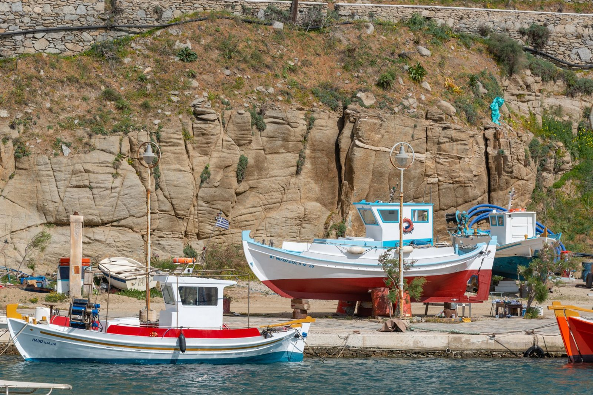

Merichas Port: Your Gateway to Kythnos
Arriving at Merichas
The ferry rounds the headland and Merichas comes into view: a working port that doubles as a proper village, stretched along a wide bay on the west coast of Kythnos. This is where most visitors first set foot on the island, stepping off the boat from Lavrio or Piraeus with luggage in hand and the immediate sense that they've arrived somewhere functional rather than purely touristic.
The harbour itself curves around the bay, with fishing boats and small yachts moored alongside the ferry dock. Tavernas line the waterfront, their tables set out under tamarisk trees that provide afternoon shade. Behind them, a handful of shops sell basics: newspapers, sunscreen, beach supplies, the things you realize you've forgotten to pack. There's a bakery that opens early, a couple of minimarkets, a pharmacy. Merichas operates as a real place where island life happens, not a resort manufactured for visitors.
The scale feels right. You can walk from one end of the waterfront to the other in ten minutes. The main road that connects the port to Chora and the rest of the island runs behind the harbour, with most of the village's accommodation and services clustered in the blocks between the road and the sea.
The Character of the Port
Merichas has a dual nature that becomes clear within an hour of arrival. In the morning, it wakes up as a working port. Fishermen sort their catch on the quayside. Delivery trucks unload supplies for the island's shops and restaurants. The ferry schedule dictates a certain rhythm: quiet periods punctuated by bursts of activity when boats arrive and depart, cars rolling off the ramp, passengers dispersing toward their destinations.
By late morning, the village settles into a more relaxed mode. Visitors claim tables at the waterfront cafes for long coffees. Locals stop to chat in the shade. The minimarkets do steady business with people stocking up on provisions. There's a practical, unforced quality to the atmosphere. Nobody is performing Greek island life here. This is simply how the place operates.
Evening brings a different energy. The tavernas fill up with diners, most of them staying somewhere nearby. Families with children, couples, groups of friends settling in for meals that stretch across multiple courses. The food tends toward traditional Greek cooking: grilled fish brought in that morning, octopus stewed with onions, local cheeses, simple salads with tomatoes that actually taste like tomatoes. Standards vary from place to place, as they do anywhere, but the overall approach is straightforward rather than fussy.
After dinner, the waterfront becomes a promenade. People walk off their meals, stop for ice cream, sit on the low wall by the water watching the lights reflect on the harbour. It's a gentle, unhurried scene that repeats itself most nights through the summer season.
Beaches Within Walking Distance
One of Merichas' practical advantages is having two beaches close enough to reach on foot. Episkopi lies just north of the port, a sandy beach that curves around a shallow bay. The water stays calm here most days, protected from the prevailing winds. A few sunbeds and umbrellas are available for rent, but plenty of space remains for people who bring their own gear or prefer to spread a towel directly on the sand.
The beach takes its name from a small Byzantine church that sits on the hillside above, visible from the sand. The walk from the harbour takes about ten minutes along the coastal road. Some visitors make this their daily routine: morning swim at Episkopi, back to the apartment for a shower and lunch, afternoon rest, evening at the port.
Martinakia sits on the opposite side of the harbour, south of the main waterfront. The approach here is different: a narrow road winds around the headland, opening onto a smaller, more sheltered cove. The beach itself is a mix of sand and smooth pebbles, with clear water that drops off fairly quickly. It attracts fewer people than Episkopi, partly because it's slightly harder to reach, partly because it lacks the organized facilities.
Both beaches work well for families. The swimming is safe, the water clean, the distances manageable even with small children in tow. Neither beach has the dramatic scenery of some of the island's more remote coves, but they deliver exactly what most people need: a place to swim, dry off in the sun, and cool down again without requiring a car journey.
Why Merichas Works as a Base
Staying in Merichas makes practical sense for several reasons. The most obvious is location. From here, you can reach any part of the island within a reasonable drive. Chora, the main town, sits just three kilometers inland. The famous thermal springs at Loutra are a short trip up the east coast. The southern beaches, the northern villages, the hiking trails that crisscross the interior: all of these become accessible day trips rather than major expeditions.
The bus service, limited as it is on Kythnos, connects Merichas to Chora and several other villages. Taxis wait by the harbour when ferries arrive. Car and scooter rental offices operate near the port, making it easy to arrange wheels for exploring. If you prefer to stay car-free, you can walk to beaches, catch the bus to Chora for dinner, and still have a perfectly satisfying holiday without feeling stranded.
The practical infrastructure matters too. Having minimarkets nearby means you can stock your apartment with breakfast supplies, drinks, snacks, and simple meal ingredients without needing to hunt them down. The bakery provides fresh bread each morning. The pharmacy handles minor medical needs. These aren't exciting amenities, but they're the ones that make daily life easier, especially on a longer stay.
The dining options provide enough variety to avoid repetition. You won't find haute cuisine or trendy fusion experiments, but you can eat well without getting bored. One taverna does excellent grilled meats. Another specializes in seafood. A third serves home-style cooking that changes based on what's available. You learn which places you prefer and develop your own rotation.
Our Place in Merichas
We offer accommodation in this area that gives you the convenience of the port location while maintaining enough distance for peace and quiet. You can walk to the waterfront for meals and supplies, reach the beaches easily, and use Merichas as your launching point for island exploration. The setup works well for visitors who want a practical base rather than a remote retreat, who value being able to walk to dinner rather than drive, who appreciate having options without needing to plan every detail in advance.
Merichas won't provide the isolated, romantic hideaway experience that some Greek islands promise. What it offers instead is a functional, pleasant, genuinely Greek environment where you can settle into island life without pretense or performance. The port brings you to Kythnos. Merichas gives you a place to actually live while you're here.
Useful background: Kythnos on Wikipedia
